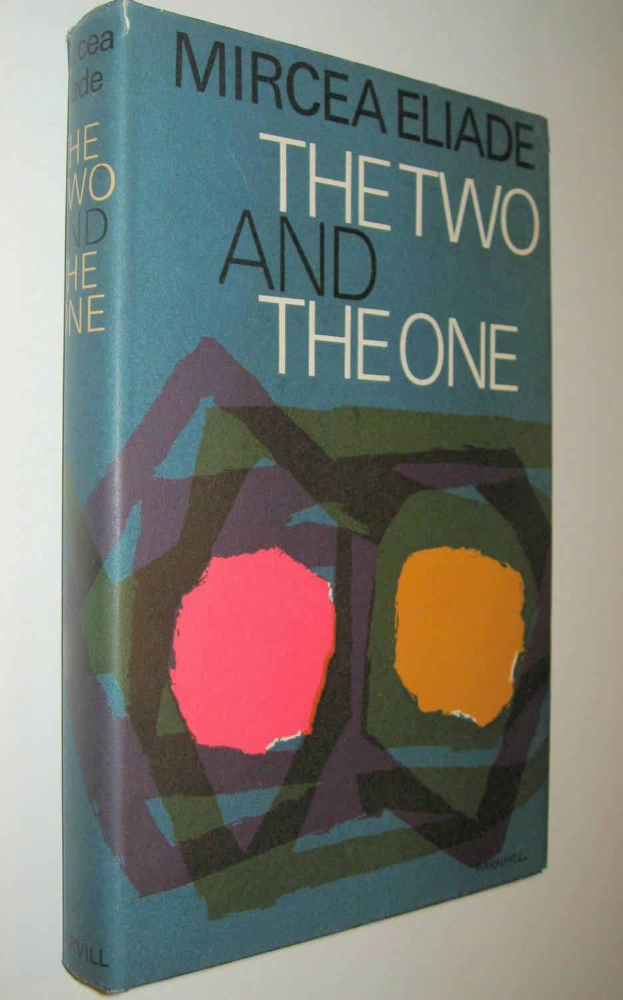
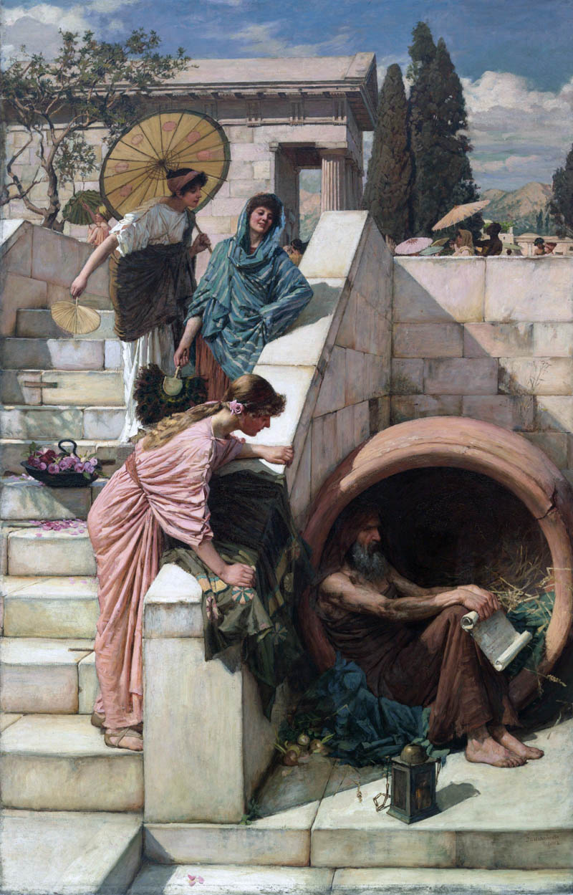
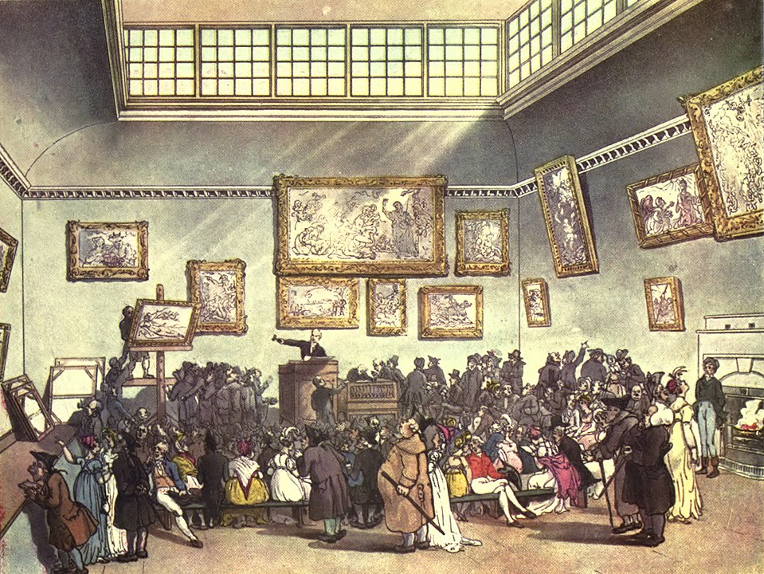

This is the tenth in a series of excerpts from an ongoing dialogue between Russell Lockhart and Paco Mitchell.
Paco Mitchell: Strange coincidences keep happening, Russ, to the extent that sometimes I think chance and necessity—or the accidental and the purposeful—are actually interwoven into patterns, which sometimes reveal themselves in flashes, or as if through cracks that open and close again in an instant. Objects or images that appear at first glance to be wildly at variance, suddenly act like they want to conjoin, leaping along creative but invisible vectors of attraction—lending a mysterious inevitability to what I at first assume is essentially unstable and “accidental”. Ultimately, it seems as if a radically new “third” comes into being, with a life all its own. I know this may sound puzzling, but let’s see if I can find a thread through what follows, and if the results bear any fruit.

Two days ago I selected a book at random from my bookshelf. As I often do, I allowed my eye to drift over the book-spines until a title jumped out at me. It happened to be The Two and the One, by Mircea Eliade. It was an old paperback from the early 1960s that I found some time ago at a thrift store, using the same “drifting-eye/jumping-title” method. “Oh, here’s something by Eliade that I haven’t read before!” So I bought it with some others, and it ended up on my shelf, unread.
When I finally did pick it up, two days ago, I began by scanning the index, for some reason, looking for a specific reference—the way you tried to find the Coming Guest in Jung’s indices. Neither did I did find what I was looking for. Instead, I was immediately struck by something else: an index-heading for “cargo cults”. I knew a little bit about cargo cults, having read Lewis Hyde’s book, The Gift: Imagination and the Erotic Life of Property, many years ago. For some reason, I thought it was interesting to find the cargo cult topic in a volume by Mircea Eliade, historian of religions. So I opened the book to page 125 and began reading.

Before I knew it, Eliade was describing the “eschatological nudism” of an unusual cargo cult—one among many—that was begun in 1944-1945, on the island of Espirito Santo (now known as Vanuatu), in the New Hebrides archipelago of the South Pacific. The cult was founded by a man named Tsek, who ordained that all should go naked, that all tribal taboos should be abolished, including traditional practices surrounding marriage and funeral rites, etc., and that along with the destruction of all cultural artifacts of white European colonialism (buildings, personal ornaments, agriculture, domestic animals, tools, etc.), people should stop working for the Whites. In fact, they should stop working altogether. All their needs would be provided for, in abundance. Furthermore, they should practice orgiastic sexuality in the open, in daylight, without respect to marriage contracts, and without restraint or shame—like dogs or birds.
To an extent, this latter principle was a primitive throwback to the philosophical Greek school of the Cynics, philosophers who believed in living a life of “natural simplicity”. Diogenes, for example, is famous for having lived in a large ceramic pot on the streets of Athens, urinating and masturbating in public, choosing to live a life of dog-like simplicity that was held to be morally superior to a life lived according to prohibitive public standards. The Cynics (from the Greek kynos, “dog”), being loyal guards like dogs, would welcome those who agreed with their philosophy, but would “bark” at those who scorned or attacked them!

Meanwhile, back in Tsek’s cargo cult of the New Hebrides near the end of WWII, a new, unitary language called Maman was developed, people learned to speak it, and, in the initial stages of the cult at least, around one-third of the island’s population had joined. The reason no one would have to work was that “America” would soon be arriving on the island, delivering to the cult-members enormous, perhaps unlimited, quantities of goods. Furthermore, cult members would never die. They would live forever. And although disillusionments lay not too far off in the near future, proof that the claims of Tsek were valid, came in the form of manufactured goods that either washed up on the beaches or were dropped onto the island by parachute from airplanes.
At this point my reading was disrupted by secular chores. During the distractions, however, my mind was mulling over the possibility that in our own troubled age—today or tomorrow—other cultic movements equally strange, if not stranger, might sprout up as we advance further into the stormy, chaotic future that we face on so many levels. In fact, the cargo cult of Tsek didn’t seem so utterly preposterous when compared with, say, the communal living of young people in the 1960s, with their sexual “liberation” practices; or the communal cult of Jim Jones—the “Peoples Temple Agricultural Project”, aka Jonestown, with its final suicide pact in Guyana (the spiked Kool-Aid). Or Marshall Applewhite, and his “Heaven’s Gate” suicide cult in 1997, with its space-ship hiding behind the Comet Hale-Bopp, waiting to pick them up.1 Let alone the so-called “Manson Family”. Or Nazi Germany, or Pol Pot, or the Cultural Revolution of Red China. The list is long. Humans are indeed a strange species.
When I returned to Eliade later in the day, I opened the book not to the index but to the Foreword, where he was making a case for his small volume in the context of the “discoveries” of European scholars, explorers and anthropologists throughout much of the 19th century, and whose scornful attitudes toward the indigenous cultures they were discovering and studying—both Asiatic and “primitive”—so besmirched their scholarship. Quite certain of their self-centered Western and European superiority, they could only see in the alien Otherness of strange and exotic foreign cultures such qualities as “primitiveness”, “savagery” or “primordial stupidity”. But gradually new ways of understanding Otherness and the alien began to open up, along with new depths of appreciation for the spiritual sophistication of non-Western cultures. In Eliade’s opinion, as a historian of religion:
“…it is [Jung’s] depth psychology that has revealed the most terrae ignotae, has caused the most dramatic confrontations. The discovery of the unconscious could be put on a level with the maritime discoveries of the Renaissance and the astronomical discoveries that followed the invention of the telescope. For each of these discoveries brought to light worlds whose existence was not even suspected. …When Jung revealed the existence of the collective unconscious, the exploration of these immemorial treasures—the myths, symbols and images of archaic humanity—began to approximate its techniques to those of the oceanographers and speleologists”.2
Thus, euro-centric assumptions necessarily had to give way, however grudgingly, to the reality of otherness, and to the psychic pressures of alien invasions into their privileged midst. Eliade again:
“After the Second World War, an encounter with the ‘others,’ with the ‘unknown,’ became for Westerners a historical inevitability. Now, for some years Westerners have not only felt with increasing sharpness what a confrontation with ‘outsiders’ means; but have also realized that it is they who are being dominated.…For the encounter—or shock—between civilizations is always, in the last resort, an encounter between spiritualities—between religions.
Then, as Eliade painstakingly laid out his basic premises, with one sentence the categories he was assembling suddenly collapsed forward in time, for me, taking on the form of something utterly new. Little by little—like the alchemical Axiom of María3—from page one came page two, from page two came page three, and from page three came page one as the fourth. This is where I was struck by an intuitive lightning-bolt, triggered by two sentences. From the end of page three to the beginning of page four of his Foreword, I read these words:
“It is not impossible that our age may go down to posterity as the first to rediscover those ‘diffuse religious experiences’ which were destroyed by the triumph of Christianity. It is equally possible that the attraction of the unconscious and its activities, the interest in myths and symbols, the fascination of the exotic, the primitive, the archaic, and encounters with the ‘others,’ with all the ambivalent feelings they imply—that all this may one day appear as a new type of religious experience.” [Emphasis added]
This took my breath away, Russ, in a shock of intuitive realization. What Eliade was describing as possibly being “a new type of religious experience”, could justifiably be applied to the strange vision that I reported in Q9—if only as a speck of dust in a tornado. A further implication would be that, in effect, any and all encounters with the Coming Guest, taken in their totality as manifestations of the objective psyche, may in sum constitute this “new type of religious experience”—even if the purpose of that religious experience, its telos, turns out to be a heralding of the end of human civilization, with the potential for human extinction, that we are exploring here.
To frame it this way suggests that your dream of the Final Ragnarök, and its invitation to celebrate the end of humanity—despite all the untold horrors that entails—might serve as yet another example of how the new type of religious experience could actually manifest itself in the world—a way it can be imagined taking shape.
Does Morpheus have a hand in this shaping?4
While browsing through Jung’s letters recently, I came across a passage that has a bearing on this statement by Eliade. Jung was saying:
“…I do not believe that reason can be the supreme law of human behavior, if only because experience shows that in decisive moments behavior is precisely not guided by reason but rather by overpowering unconscious impulses. There is nothing to cope with the latter but their own equivalent, something that adequately expresses their nature, gives them name and shape. There thus arises in consciousness a receptacle, so to speak, into which the unconscious onslaught can pour and wherein it can assume cultural form. If this does not happen, there is unquestionably a danger that the onslaught will express itself as cataclysmically as an avalanche. This form has always been given by religion, never by reason”. [Emphasis added]
I had read this passage by Jung before picking up Eliade’s book, and Jung’s passage must have been percolating in the back of my mind. I had been primed with the idea that anything of global consequence, to be capable of withstanding the destructive forces so rampant and widespread today, would have to be of a religious nature. Nor did I have any particular religion in mind. For the moment, the tabula was rasa.
When I later came across Eliade’s critical phrase, the two ideas, like chemicals, virtually exploded. Yes! It will take something like a religion—or comparable to a religion—to contain the outpouring of unconscious contents and energies from the objective psyche, to give them a new form, once the proverbial shi—no!—once the proverbial chickens come home to roost.
It is worth emphasizing that Eliade, whose specialty was charting the history of religions—including pre-historical mythologies, practices and traditions—was referring here to a new “type” of religious experience in the future, something we have never experienced before—not just one more “new religious experience”, but a new type of religious experience. Therefore, intuitive logic tells me that Christian anticipations of the “End Times”, the “Rapture”, etc.—though apocalyptic—do not belong to this brand-new type of religious experience—as Eliade is using the phrase, let alone the even more radical use I am proposing for it. Rather, the Christian imaginings of End Times seek to confirm the biblical view of old, not to announce something never heard of before.
Most religious mythologies, as you’ve pointed out, Russ, portray endings as always leading to new beginnings, if only on different levels or in new forms. Devout Christians may acknowledge their inevitable death, for example, but only as a transitional pathway to a glorified eternity—not so far-removed from Tsek’s cargo cult.
What you and I have been trying to imagine here is the permanent termination of our imagining species, period.
So—throughout Q10 our course has gone from the index of Eliade’s The Two and the One, to Tsek’s cargo cult, from there to Eliade’s Foreword, where we encountered Western civilization’s need to open up to, and learn from, the strange, the alien, and the Other, only to land on Eliade’s dazzling words on the fourth page of his Foreword, where his image of a “new type of religious experience” revealed the possibility of a great consolation in the form of an imaginal context for approaching and enduring the Sixth Great Extinction.
I have re-tasked Eliade’s words, then, to serve as our parakletos—a Greek term meaning “one who comes to the side of”, “comforter”, “advocate”—in our deepening, global, climate-extinction dilemma, namely, how can we meet, greet and celebrate the Coming Guest, the unavoidable objective psyche which contains us, and whose messages some of us can witness through dreams and images that flow to us from it—as for example your “final Ragnarök” dream, or perhaps through visions like mine, of the alien, unitary figure staring at me through the drifting mist. Was it trying to get my attention?
RL: It’s nearly forty years since I read Lewis Hyde’s masterful book, The Gift.5 Not long after reading it, we met in my office in Port Townsend, overlooking the Strait of Juan de Fuca, also known as the Graveyard of the Pacific. What I recall most from our conversation that afternoon, was our discussion of the origin of the phrase “Indian Giver”. As Lewis described it, when the Indian would give a Puritan a gift of a peace pipe or something similar, the Puritan took the gift as property and would display it as such. Later, when the Indian saw it, he took it back. The Puritan interpreted this as not being a gift at all, since its return was required. However, what the Indian responded to was the fact that the gift had not circulated, that is, the gift had not been re-gifted to another. The Indian’s belief was that the circulation of something essential had been broken and this would have negative implications for the community. It is useful to realize that the very word community means “gifting” (munus) “together” (com).
It was clear from this example that gifting was essential to the spirit of community, while property was something quite different, something that led not to community but to privilege and power. Lewis made clear that this was a simple example of property as capital and served a different purpose than gifting.
My argument that day was that this simple example illustrated a major leitmotif of our culture and illustrated clearly how capital was geared toward accumulation, while gifting illustrated the underlying religious nature of community. Moreover, I expressed the idea that our entire history since the earliest time, could be written through the lens of this disparity.
Prompted by your reference to The Gift, I was reminded of this visit with Lewis Hyde. I would argue now that this disparity between commodity culture and gift culture is even more extreme, perhaps reaching a degree where the commodity culture will begin to fracture and break down. This led to my thinking about how the commodity culture is the prime mover of denial in relation to climate change. I was set to wondering how the gift culture would be what finally emerges as how humans will be able to function as the climate catastrophe and the sixth extinction begin to manifest in ever greater degree. I do not think that the commodity culture will do anything but make everything more miserable.
The purpose of Hyde’s work was to show how the gift culture was at the heart of genuine art—not the commodity culture. When the commodity culture invades the realm of art it has a degrading and devaluing effect on art and artist alike. As you can see from any auction result at Christie’s or Sotheby’s, the “big news” is the money fetched—nothing about the art or artist.

I have argued in these pages and elsewhere that relating to the artistic impulse in each person is a more generative way to approach the dire issues in our future than anything to do with money or other commodity dynamics.
The second thing that grabbed my attention was your mention of the cargo cult that originated on Vanuatu. This cult essentially abandoned the entire commodity dimension and became a purely gift-based culture even eschewing work altogether asserting that their needs would be provided by America. And sure enough, supplies and such were washed up or air-dropped and the islanders were provided for—a gift from the heaven known as America.
You point our how these cultish practices are not so far from cultish examples from America and around the world. Eliade’s claim that we may see a “return” of the religious root of these various expressions, as if the “spirit of the time” as well as the “spirit of the depth” was lurching toward a new type of religious experience. Is this what Yeats was imaging in that “rough beast” as it “slouches toward Bethlehem to be born”? I would be happy to argue that this is so.
So, this puts the celebration of the final Ragnarök as a religious ritual, not just a party. It was Jane Harrison who argued that ritual was first and religion followed—an amazing insight.6 In this context, I believe you are right to assert that all “encounters” with the objective psyche “could” become the root of a ritual that has the potential to give rise to a new “type” of religious experience. Note how personal and individual this would be.
What a new type might be is not easy to fathom, so used as we are to the historic religions that still hold sway. It is difficult to think outside those contexts. But it is right here in this difficult-to-fathom pool that Jung expresses his idea of the coming guest. And it is likely that the disparity between this image and Jung’s final dream a few short months later is not a disparity at all, but that the coming guest is tied in some way to what Jung called the “final catastrophe”.
The final catastrophe and the final Ragnarök have an eerie similarity.
Here is a minor detail that may prove important. When Jung wrote “the coming guest” in that letter to Sir Herbert Read, he did not capitalize it. But in the course of two short sentences that follow, Jung capitalizes Dream. If we take this as deliberate, what is Jung trying to hint at here?
Well, a new type of religious experience might be found in the dream as source of ritual. And, Jung speaks in this section of the great dream always manifesting through the artist as mouthpiece. This is highly suggestive of the intertwined nature of art and dream, both as ritual, both as source of a new type of religious experience.
So, then, I want to suggest that as you gaze upon the visage of the alien presence, and he gazes at you, that you and he, are engaged in a ritual and that this is specifically the kind of encounter that has the potential of producing a new type of religious experience.
References
1 https://en.wikipedia.org/wiki/Heaven%27sGate(religious_group)
2 This reference is to the discoveries by deep-cave explorers of “living fossils” that were thought to be extinct.
3 Maria Prophetissa was a 3rd-century alchemist, also known as Mary the Jewess, or Mary the Copt. Her “axiom” was an alchemical precept: “One becomes two, two becomes three, and out of the three comes the one as the fourth”.
4 https://www.britannica.com/topic/Morpheus-Greek-mythology
5 Lewis Hyde. The Gift: Imagination and the Erotic Life of Property. New York: Vintage Books, 1979.
6 Jane Ellen Harrison. Prolegomena to the Study of Greek Religion. Cambridge University Press, 1908.


{kind=link}
{kind=link}
{kind=link}